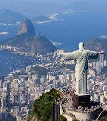

Rio de Janeiro
Située au bord de la mer, Rio de Janeeiro est une grande ville du BrésiL. Cette ville est notament connue pour ses grandes plages de Copacabana er d'Ipanema, sa statue du Christ Rédempteur ;ses favelas tentaculaires (bidonvilles).L célèbre carnaval de Rio, avec des défilés de chars, costumes flamboyants et danseurs de Samba est l'un des plus grands au monde.
A-Statue du Christ Rédempteur
Il s'agit d' une grande statue du Christ dominant la ville de Rio, du haut du mont de Corcovado et faisant une hauteur de 38m.
Elle est devenue au fil des ans un des emblèmes reconnus internationalement de la ville, au même titre que le Pain de Sucre, la plage de Copacabana ou le carnaval de Rio.

B-Mont du Pain de Sucre
Encore appelé le Pain de Sucre, le mont du Pain de Sucre est un pic granitique d' une hauteur de 396m situé dans la ville de Rio et accessible par un téléphérique.
Le nom de Pain de Sucre serait apparu au xvie siècle à l'instigation des Portugais. Il devrait son nom à sa forme très particulière évoquant les blocs de sucre raffiné et placé dans des moules en argile pour être transportés par bateau à l'époque du commerce de la canne à sucre.
Le nom de Pain de Sucre serait apparu au xvie siècle à l'instigation des Portugais. Il devrait son nom à sa forme très particulière évoquant les blocs de sucre raffiné et placé dans des moules en argile pour être transportés par bateau à l'époque du commerce de la canne à sucre.

C-Copacabana
Copacabana est un quartier des plus animés de Rio attirant habitants et touristes por des activités très fun sur ses plages de sable.Célèbre pour sa plage en forme de croissant, cette ville est surplombée par des gratte-ciels dont le Copacabana Palace, un hotêl de style Art déco.